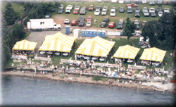

VIP Stockton Corporate is Plan #6, and is a tented suite viewing area for groups of 25 or more. This area offers a great view of the racing, and especially of the Start/Finish Line.
For groups of 25 to 99, tickets are $50 each, and for 100+ they are $45 each. Call Spirit Of Detroit THUNDERFEST for more Hospitality Package info.
A free Gold Cup Pit Pass is included with every ticket for access to the Dodge Pits on Thursday and Friday.
For parking information, see the Judges Stand Parking info.
![[Miss Budweiser Winning in 1995]](finish3.gif)
This photo is taken from Stockton Park and shows Miss Budweiser (driver: Chip Hanauer) crossing the line to win the Gold Cup in 1995. The blue & white tent at the far end is part of the Judges Stand seating, and the yellow bouy marks the Start/Finish line.
The photo below is of Stockton Park from the air.

 Return to the Ticket Info page.
Return to the Ticket Info page.
All contents Copyright © 1997 Spirit of Detroit THUNDERFEST, except where noted.
Web page created by Brian Reed.
 Return to the Top THUNDERFEST page.
Return to the Top THUNDERFEST page.
All Rights Reserved.